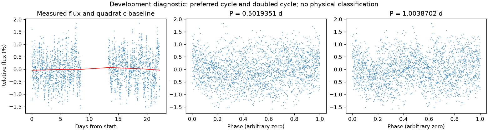
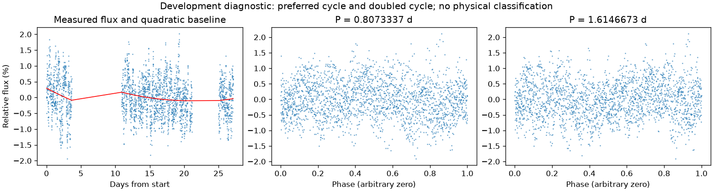

并非所有时段都支持重复变化
第二版周期：None 天；状态：not_established。

左图红线是缓慢基线；右面两图去除该基线。若未通过周期要求，两图只展示得分最高的竞争解释。
| 竞争周期（天） | 交替周期预测改善 | 两组各自改善 | 通过初筛 |
|---|---|---|---|
| 0.5019351 | -3.1% | -2.1% / -4.0% | 否 |
| 1.4464335 | -5.5% | -15.4% / 3.2% | 否 |
| 1.0023776 | -8.3% | -6.3% / -10.0% | 否 |
| 0.2512254 | -8.4% | -9.4% / -7.4% | 否 |
| 2.8861724 | -11.6% | -12.6% / -10.4% | 否 |
| 5.7648862 | -17.6% | -32.6% / -2.1% | 否 |
| 0.7139023 | -20.7% | -19.6% / -21.9% | 否 |
| 0.7228524 | -32.8% | -33.0% / -32.7% | 否 |
“预测改善”衡量用一组周期的形状预测另一组，比只有缓慢基线好多少；负数表示更差。搜索和预测共用了资料，因此这不是可信概率，也不是独立验证。
第二版周期：None 天；状态：not_established。

左图红线是缓慢基线；右面两图去除该基线。若未通过周期要求，两图只展示得分最高的竞争解释。
| 竞争周期（天） | 交替周期预测改善 | 两组各自改善 | 通过初筛 |
|---|---|---|---|
| 0.8073337 | -2.1% | -2.2% / -2.1% | 否 |
| 1.3443624 | -2.3% | -5.7% / 1.5% | 否 |
| 0.6255075 | -3.3% | -1.8% / -5.2% | 否 |
| 1.8508658 | -4.9% | -8.2% / -0.6% | 否 |
| 0.9166505 | -6.9% | -6.4% / -7.5% | 否 |
| 0.3370704 | -9.7% | -12.8% / -6.8% | 否 |
| 0.6721516 | -10.3% | -12.3% / -8.0% | 否 |
| 0.4586007 | -11.5% | -7.5% / -15.7% | 否 |
“预测改善”衡量用一组周期的形状预测另一组，比只有缓慢基线好多少；负数表示更差。搜索和预测共用了资料，因此这不是可信概率，也不是独立验证。